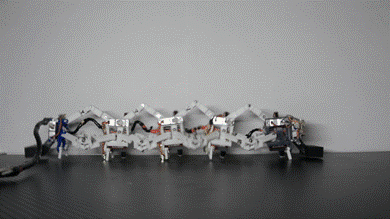

About Me
I am a Ph.D. candidate at Xi’an University of Architecture and Technology. My research focuses on legged robots, bio-inspired robots, elastic actuation, and robot control. I am particularly interested in the co-design of mechanisms, actuation, and control, and I especially enjoy and excel at hands-on robot platform development, from prototype design and assembly to control implementation and experimental testing.
Research Interests
Legged Robotics Design and analysis of jumping and locomotion systems for compact legged robots.
Bio-Inspired Robots Mechanisms and motion inspired by biological systems.
Elastic Actuation Parallel elastic actuators and clutch-based mechanisms.
Robot Control Co-design of actuation, mechanism, and control systems with experimental validation.
Publications
-
[1] Parallel Elastic Ankle Actuator With a Unidirectional Clutch for Explosive Motion in Legged Robots

-
[2] Caterpillar-Inspired Multi-Gait Generation Method for Series-Parallel Hybrid Segmented Robot

-
[3] Design and Implementation of a Novel Two-Wheeled Composite Self-Balancing Robot for Stationary Operations in Unknown Terrain

-
[4] Gait Planning for 4-Steward Structure Based Caterpillar-Like Robot: A Segmental Progressive Generation Approach

Projects
Project 1 Brief description of project scope and outcomes.
Project 2 Brief description of project scope and outcomes.